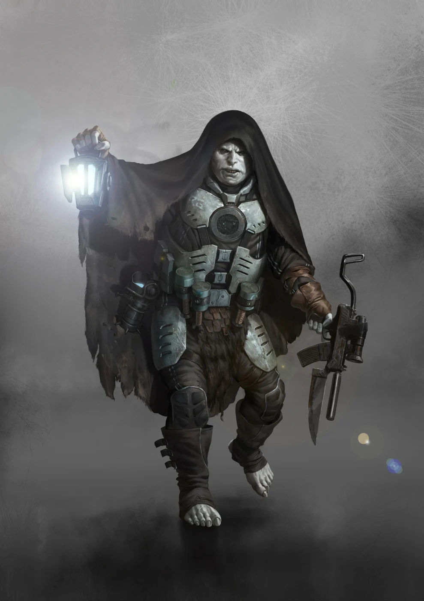

Leaders
- Demagogues
- Mesnik
- Vesna
- Unnamed Others
CULT DOSSIER
The Vault Crawlers
+1 to maximum skill level

BENEATH THE WORLD
The Palers have lived beneath the earth for centuries, sealed inside ancient bunkers they call Dispensers. Generations have been born, labored, worshipped, and died without ever seeing a horizon. Corridors replace roads, ventilation shafts carry the breath of the world, and glowing figures upon ancient screens speak with voices that have guided communities since before anyone remembers.
Palers believe they are the chosen custodians of sleeping gods.
Deep within forbidden levels lie chambers that ordinary Palers may never enter. Someday the divine ones will awaken, open the sealed depths, and lead their faithful onto the surface. The Palers will no longer hide from humanity. They will stand beside their gods as a priestly people in the new world.
Until that day, they endure.
A Dispenser is more than shelter. It is homeland, temple, machine, and universe.
Every functioning system matters. Pumps move water. Ventilation keeps the air breathable. Generators preserve light and heat. Storage chambers hold equipment laid away generations ago. Algae tanks and ancient reserves provide food, though many are failing after centuries of use.
Maintenance therefore carries religious weight. Instructions become ritual because forgetting a sequence may mean suffocation, flooding, darkness, or starvation. A procedure repeated for ten generations may still work even when no one remembers why it was written that way.
Palers grow up surrounded by humming machinery and sealed doors. Darkness does not frighten them. They navigate spaces in which an abovegrounder would be almost blind, and they learn every echo, vibration, draft, and change in the sound of machinery.
What terrifies many Palers is the world without walls.
Sacred images appear throughout the Dispensers. Blue figures manifest upon screens and walls, accompanied by deep artificial voices, commandments, warnings, and promises.
To the Palers, these are manifestations of the divine order.
Their faith teaches that greater beings sleep in the sealed chambers below. When they awaken, they will wield impossible technology, judge the peoples of the surface, and establish a world of abundance. Generations of Palers have guarded those chambers without demanding proof because guardianship itself gives their lives meaning.
The gods are not distant abstractions. Their doors are physically present.
A Paler may have walked past the same sealed portal every day since childhood, knowing that something sacred waits beyond it.
Among the most revered Paler artifacts are Sun Discs.
These small devices contain codes capable of activating systems, opening doors, and granting access to sections of Dispensers that may have remained sealed for centuries. To a technician they are indispensable tools. To the faithful they are also signs of divine favor.
A newly discovered code can transform an entire bunker. Corridors thought dead may light again. Ventilation systems may awaken. Armories or forgotten storage chambers may become accessible.
For Revivers and Redeemers, the Sun Disc is both key and proof of identity. When they reach another Dispenser, the codes they carry can open doors its inhabitants have struggled with for generations.
Technology and religion are inseparable because the same object can genuinely perform a miracle.
Sound carries enormous importance underground.
In darkness, voices identify people before faces do. Commands must travel through corridors and machinery. Stories preserve knowledge that may never have been written down. Even communication between separated sections can depend upon tapping through pipes and walls.
Palers therefore judge voices differently from surface dwellers. Resonance, control, rhythm, and tone carry social weight.
Demagogues elevate this tradition into something far more powerful. From childhood, promising speakers are trained in posture, expression, intonation, storytelling, and the emotional use of sound. A skilled Demagogue can inspire obedience, provoke terror, soothe conflict, or push listeners toward anger and submission.
Within a Dispenser, the Demagogue may lead councils, resolve disputes, and hold the community together.
Whether that influence is wisdom, conditioning, manipulation, or all three depends greatly upon who is speaking.
Every Paler begins as a Specter, owing service to the community and possessing little authority. Worth must be demonstrated.
Solars become custodians of the Dispenser's machinery. They maintain ventilation, pumps, power systems, solar collectors, and other ancient infrastructure. Experienced Solars may become Auroras, learning to manipulate deeper control systems, illuminate or darken corridors, lock portals, and awaken functions inaccessible to ordinary Palers.
Revivers turn outward. They search the surface for forgotten Dispensers and lost members of their people. Successful Revivers become Redeemers, carrying accumulated codes and penetrating facilities that have resisted others for generations.
Phantoms are fighters and raiders, striking from darkness with weapons recovered from ancient stores. Cyclopes are the most feared among them, entrusted with rare equipment from deeper arsenals.
Aspirants study the power of voice and authority until they may become Demagogues.
Each path serves the same promise: preserve the Dispenser until the gods return.
Palers once believed they had found and opened every surviving Dispenser known to their ancient maps.
Then evidence appeared suggesting otherwise.
Records speak of forty-four additional facilities, including sites unknown to generations of Revivers. One such location, Gusev, was identified through information obtained from the Chroniclers. Suddenly the old search began again.
Revivers now cross cultures and borders hunting fragments of maps, coordinates, command codes, bunker markings, and forgotten entrances. They explore old facilities and sometimes bargain with people their traditions taught them to despise.
Every discovery raises the same hope.
Somewhere below another mountain, city, forest, or ruin, Palers may still be waiting behind a door that no longer opens.
Centuries underground have created a problem faith cannot solve: the stores are running out.
Algae tanks fail. Food becomes poisonous or insufficient. Machinery designed to sustain generations finally breaks down.
Agriculture is alien to many bunker communities. Their ancestors received supplies from stores according to ration schedules, so when the stores empty, the obvious solution is not necessarily to plant fields. It is to find new stores.
The surface has plenty.
Palers therefore raid settlements at night, stealing food, livestock, tools, and anything else the Dispenser requires. In the northern Balkhan, where many bunkers lie hidden, whole villages have been devastated by repeated attacks.
Some Paler communities understand the danger of destroying their own source of supplies. Large Dispensers such as Thalus and Fermat rotate their targets, allowing villages time to recover before raiding them again.
From the Paler perspective, this can resemble careful management.
From the village's perspective, it is predation.
Traditional Paler culture considers surface humanity inferior.
Abovegrounders squander resources, live beneath an exposed sky, worship invisible gods, and possess only fragments of technology the Palers have guarded for generations. Many Palers believe these peoples exist outside the divine plan except as servants, resources, obstacles, or subjects of the future order.
Trade nevertheless occurs. Merchants bring food to bunker entrances and sometimes leave with pieces of machinery that Palers consider worthless. Chroniclers will pay extraordinary sums for the same artifacts.
Revivers encounter an even more complicated reality. Finding lost bunkers requires guides, information, negotiation, and occasionally friendship. A Paler raised to command may discover that asking politely works better. Someone taught that abovegrounders are cattle may have their life saved by one.
Exposure to the surface does not automatically destroy Paler certainty.
It gives certainty something to argue with.
Where persuasion and secrecy fail, the Palers possess their own warriors.
Phantoms raid settlements, defend Dispenser entrances, and remove people who threaten the community. Their weapons can include firearms and explosives preserved from ancient Guardian stores.
Cyclopes are feared even among surface peoples familiar with Paler raids. Deeper arsenals become available to them, including equipment allowing them to hunt effectively through darkness.
For an isolated bunker, such warriors may be the only barrier between survival and annihilation.
For a neighboring village, they are the creatures that arrive after sunset.
Not every Paler now waits obediently for the gods beneath their own Dispenser.
Figures known as Sleeper Prophets walk the surface: Daimondal, Trice, Helios, Uriz, and Enceph. Their technology and abilities appear miraculous even to Palers, and each teaches a path that diverges from the old duty of simply guarding the bunker.
Those who abandon their former lives to follow one of these Prophets become Halos.
Traditionalists can regard this as betrayal. A Halo has left the sleeping gods entrusted to their community and sworn allegiance to one already walking the world.
Halos see matters differently. Perhaps the awakening has already begun.
The Prophets do not agree on what comes next, making their appearance as disruptive to Paler society as it is inspiring.
Paler society survived because its people obeyed.
For centuries that obedience kept pumps running, doors sealed, machinery maintained, and communities alive in places where a single failed system could kill everyone. Faith gave generations a reason to endure darkness they never chose.
Yet the world beneath the earth is failing.
Food is disappearing. Lost bunkers must be found. Surface peoples can no longer be ignored. Revivers learn that outsiders are more complicated than the old teachings claim, Auroras discover how much of the sacred machinery can be manipulated, and Sleeper Prophets offer competing visions of the future.
A Paler may still love the Dispenser completely while beginning to doubt what it taught them.
Every Paler eventually faces the same question: if the door finally opens, are they meant to free the gods waiting beyond it—or themselves?
PATHS OF THE DISPENSER
Specters branch into the technical, exploratory, and martial traditions before the paths converge again at the highest ranks. Select a rank for its full description and mechanics.
DARKNESS & MEMETICS
RELICS OF THE GODS
Open or close each equipment group to focus the reference.